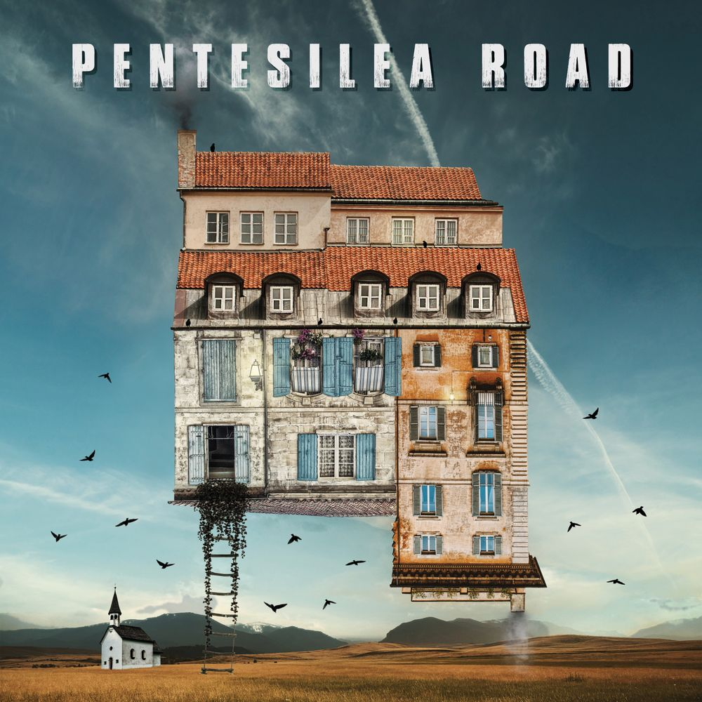

Discography
The Albums

2025 · Double Album · Dutch Music Works
Sonnets from the Drowsiness
An exploration of lucid dreams, the dreamtime, and the relationship between future and past. Bonus track featuring Zak Stevens (Savatage) in the double Digipak edition.
Buy the CD

2021 · Debut Album
Pentesilea Road
Loosely inspired by Italo Calvino's Invisible Cities. Ranked among the best 2021 Prog Albums by DPRP, Rock Progresivo, and Unique High Fidelity (#30 of 50).
Buy the CD